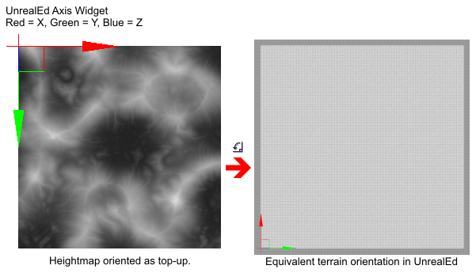

地形高度图: 使用外部创建的地形高度图
概述
虚幻引擎3支持两种地形设计技术，一种是直接地在地形网格物体上进行手工描画来创建山坡和小姑，还有一种导入外部创建的高度图文件，它们一般为UnrealEd的G16位图或T3D网格物体格式。
UE3中的地形对象是一个标准的3D平面网格，它具有常量的X.Y间隔，该间隔由Display.DrawScale 和 Display.DrawScale3D.X/.Y属性指定。因为地形使用常量的X.Y间隔，它便不支持通过结合共面来进行网格物体三角形数量优化，所以一个128x128的地图在内部的高度图将总是具有129x129阵列。常量X.Y间隔也意味着那些类似于洞穴和悬挂物的物理系统将不能通过地形对象来直接地创建，必须把它们作为额外的网格物体放置在场景中。常量的X.Y间隔也决定了在两个顶点之间的给定相对高度上可以创建的最大斜坡角度： 网格间隔值(DrawScale)越小，则可以获得的斜坡越陡峭。对于像悬崖那样的斜坡，应该尝试使用静态网格物体，而不是使用一个密度非常高的地形。
每个地形网格顶点的Z坐标值可以设置为16-位范围(0到65535)内的值来制定它的相对高度。这些值通常通过在虚幻编辑器中描画地形网格物体或者通过导入包含地形网格物体顶点高度值的高度图文件来进行修改。
地形系统具有一个可选的渲染优化系统，它使用动态LOD多边形细分来降低在远处要渲染的网格物体的数量。在距离相机指定距离的地方，地形块将会相互结合来降低要渲染的三角形的数量。

高度图概述
地形高度图是一个具有地形网格物体中每个点的高度值的X*Y数值阵列。对于视频游戏设计的应用来说，大多数常用的高度图布局是一个正方形网格，通常它们的大小是一个2的幂数+1所得出的值，比如129x129 或 257x257。高度图数组中的每个值都直接地和最终地形网格物体的顶点的Z值(高度)相对应。
为了形象地介绍高度图，您可以想象一个灰度化位图，在该图中暗灰色是较低的海拔高度，亮灰色是较高的海拔高度。地行位图的最常见的值的范围是16-位，它支持的海拔高度范围是1到65535。因为标准的绘图软件和标准的视频调试器以及CRT/LCD计算机显示器仅能显示8-位的灰度化图二不是16-位的灰度化图，然而已经特地地创建了专门的软件来创建及编辑高度图。

Heightmap(高度图)创建
可以使用很多方法来获得或创建高度图，最常用的一种方法是数字高程模型 (DEMs)?，它是通过飞机、人造卫星或太空飞船收集的真实的行星地形数据；然后计算机根据“算法”生成高度图，这个高度图可以使用很多软件应用程序来创建，比如HMES, Leveller, Terragen, World Machine等。关于根据DEMs创建高度图的更多信息，请参照这个文档?。
转换到UnrealEd中的算法高度图最常见的文件格式是Raw 16-位，许多高度图软件应用程序都支持改格式包括先前提到的哪些软件。Raw-16是一个简单的无头二进制文件格式，它把把的raw 16-位高度数据作为一个X*Y流保存。虚幻编辑器的本地高度贴图高度格式是G16，如果高度图软件不支持G16，那么便需要使用中间媒介将其从Raw-16转换为G16格式。有几个工具可以进行这方面的转换，包括G16Ed 和 HMCS。
算法高度贴图软件应用程序通常使用一种或多种噪声算法，比如Perlin，来产生基本的山坡和峡谷的高度图布局。然后可以选择性地使用风化侵蚀、冻结成冰等地形算法来对这个高度图进行修改，并且您也可以使用各种不同工具来对其进行编辑和雕刻。由于创建高度图的技巧和方法在每个高度图软件应用程序中是不同的，所以我们将不会再深入地讨论这个主题。
Heightmap Resolution(高度图分辨率)
高度图的分辨率应该是期望的地图块分辨率+1。换句话说，一个128x128的地形需要一个分辨率为129x129的高度图，一个256x256的地形需要一个分辨率为257x257的高度图。地形中的块的数量可以在地形actor属性Terrain.NumPatchesX 和 Terrain.NumPatchesY下进行设置。
 如果把高度图导入了一个现有的地形actor中，但该地形的Terrain.NumPatches不和导入的高度贴图分辨率相匹配，则会产生以下结果：
如果把高度图导入了一个现有的地形actor中，但该地形的Terrain.NumPatches不和导入的高度贴图分辨率相匹配，则会产生以下结果：
- 如果高度图的分辨率大于在Terrain.NumPatches中设置的值，比如要导入一个257x257的高度图到一个现有的128x128地形中，整个地形的分辨率大小将会被调整为导入的高度图的分辨率。
- 如果高度图的分辨率小于在Terrain.NumPatches中设置的值，比如要导入一个128x128的高度图到一个现有的128x128地形中，那么地形的两个边缘的高度值将保持为0，从而导致沿着顶部和右侧出现一个山脊，如下图所示：
 某些高度图软件仅支持创建尺寸大小为2的幂数的高度贴图，比如128和256，它们不支持所要求的高度贴图分辨率为2的幂数+1，比如129 和 257。这些高度贴图在导入时将总是会出现前面提到的两个具有山脊的侧。现在有两种可用的方法来解决这个问题，或者使用UnrealEd 中的Flatten(平整)工具来沿着两个边缘来编辑地形(这样做会需要一定量的时间)，或者把高度图文件转换成一种和绘图软件相兼容的格式比如TIF-16，然后通过 复制/粘帖 边缘像素线来使它的大小从2的幂数扩展为2的幂数+1。
某些高度图软件仅支持创建尺寸大小为2的幂数的高度贴图，比如128和256，它们不支持所要求的高度贴图分辨率为2的幂数+1，比如129 和 257。这些高度贴图在导入时将总是会出现前面提到的两个具有山脊的侧。现在有两种可用的方法来解决这个问题，或者使用UnrealEd 中的Flatten(平整)工具来沿着两个边缘来编辑地形(这样做会需要一定量的时间)，或者把高度图文件转换成一种和绘图软件相兼容的格式比如TIF-16，然后通过 复制/粘帖 边缘像素线来使它的大小从2的幂数扩展为2的幂数+1。
转换高度图
在导入高度图文件之前，这些文件必须保存为UnrealEd's G16 或T3D格式或者保存位可以转换为G16 或T3D的格式。如果高度图软件不支持本地的G16，但是可以导出为RAW-16或类似的常见格式比如Terragen的.ter文件，那么可以通过使用工具G16Ed 或 HMCS来把它们转化为需要的文件。
这个示例地形被保存为RAW-16格式，并且它以Z上的海拔高度为中心聚集从而使得地形在16-位高度范围内。由于这个高度图是256x256，而不是实际需要的大小257x257，那么应该把它保存为TIF-16文件，然后在支持16-位灰度化图像的绘图软件中对其进行编辑，来把它的底部和右侧扩展一个像素，从而使得它的大小为257x257，把它重新保存为TIF-16，然后再次把它转换为G16格式。
 注意导入到UE3中的高度图是定向的，以便地形actor在高度图的左上角，从而使得网格物体可以在高度图的顶部展开正X值，沿着高度图底部展开正Y值。
注意导入到UE3中的高度图是定向的，以便地形actor在高度图的左上角，从而使得网格物体可以在高度图的顶部展开正X值，沿着高度图底部展开正Y值。

导入高度图
创建地形及导入高度图的步骤
注意： 要想在导入过程中自动地在地图中创建一个新的地形actor ，请跳过步骤1和步骤2，并且在步骤4中不要选中"Into Current(到当前地形)"复选框。
1. 插入一个Terrain(地形)actor到地图中
2. 设置地形actor 的Terrain.NumPatchesX 和 Terrain.NumPatchesY的值为高度图G16文件的大小-1。那么如果高度图是129x129，那么设置NumPatches值为128。
3. 在地图原点插入一个DirectionalLight(定向光源)。把Movement.Rotation.Pitch的值改为-45度，把Movement.Rotation.Yaw的值改为45度。
4. 跳转到Terrain Edit(地形编辑)模式，打开地形编辑对话框。
- 如果地图中有不止一个地形，请确保在View Settings(视图设置)组的Terrain(地形)下拉组合框中选择正确的地形。默认显示的第一个地形actor是"Terrain_0"。
- 在 Import/Export(导入/导出) 组中，选中"Height Map Only(进高度图)"和"Into Current(导入到当前地形)"复选框，在Class(类别)下拉选框中选择"G16BMPT3D"，因为我们导入的是G16.bmp，然后选择‘导入’按钮。在文件对话框中定位G16高度图文件并打开它。如果高度图文件没有问题，比如不正确的文件格式，那么高度图将会被导入到地形中。视口将会自动地更新来显示新的地形高度图表面形状。
5. 如果需要，可以在Terrain Properties(地形属性)中调整Display.DrawScale3D.X, .Y 和 .Z值来获得一个正确缩放的地形。
_请注意，导入及覆盖现有地形的高度图将会重置所有的Terrain Editing (地形编辑)来看到效果，并且每个方块及便的三角形变将会把"Orientation Flip(方位翻转)"设置为默认值。换句话说，在导入和覆盖现有地形actor的高度图时，任何设置为不可见的块或者任何被翻转的边它们的设置都将会被清除并返回到正常状态。

修复地形边缘的方位
导入的高度图通常会出现一种视觉异常，这减损了要渲染的表面的光滑质量，使得方块中的三角形之间的边和尖锐的山脊或峡谷呈现垂直状态。它们将会沿着和地形网格物体成45度的山脊和峡谷的方向出现的类似于“牙齿”的形状。
 通常消除这些山脊和峡谷中的“牙齿”的最简单的方法是在渲染默认的灰度化“null(空)”棋盘式贴图后，在应用地形层贴图之前旋转三角形的边缘。把Terrain.MaxTesselationLevel 和 Terrain.MinTesselationLevel的值都设置为1。找到“牙齿”形的山脊和峡谷，通过相对于灰度化默认贴图的菱形阴影便可以很容易地辨认出它们，然后使用地形编辑对话框的"Orientation Flip(方位翻转)"工具来在它们上面进行编辑，直到阴影变得线性为止。
通常消除这些山脊和峡谷中的“牙齿”的最简单的方法是在渲染默认的灰度化“null(空)”棋盘式贴图后，在应用地形层贴图之前旋转三角形的边缘。把Terrain.MaxTesselationLevel 和 Terrain.MinTesselationLevel的值都设置为1。找到“牙齿”形的山脊和峡谷，通过相对于灰度化默认贴图的菱形阴影便可以很容易地辨认出它们，然后使用地形编辑对话框的"Orientation Flip(方位翻转)"工具来在它们上面进行编辑，直到阴影变得线性为止。